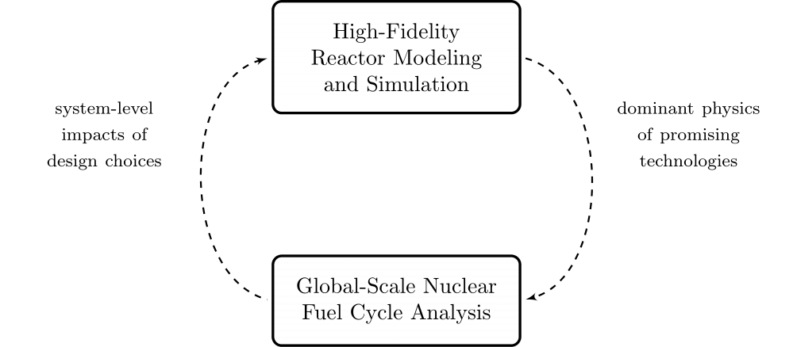
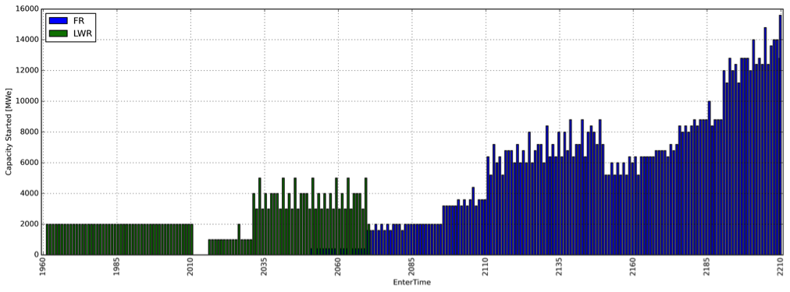
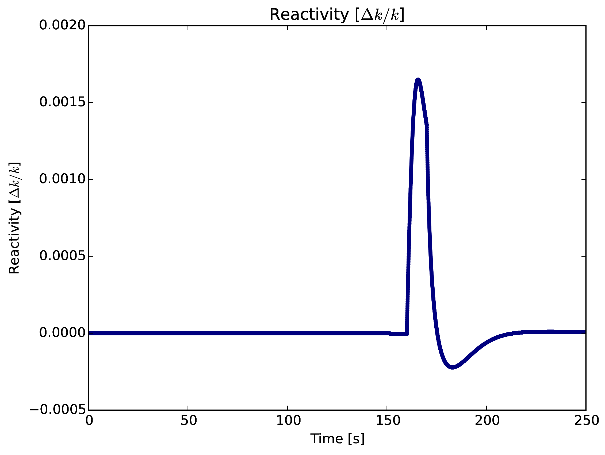
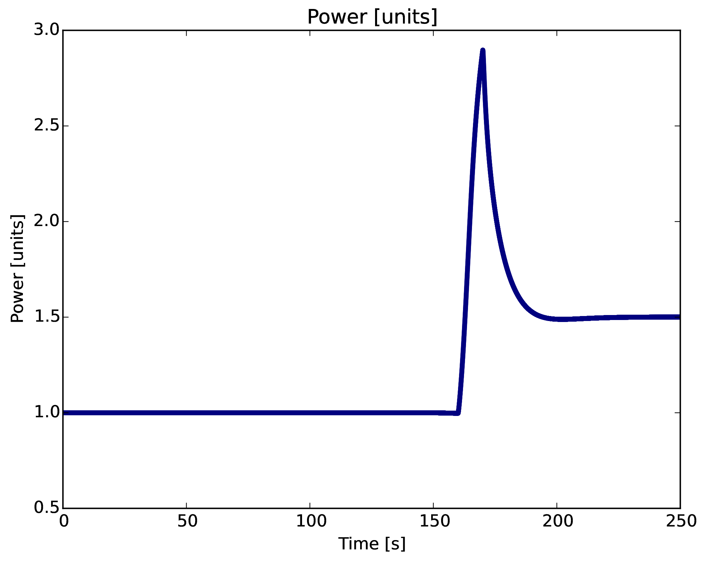
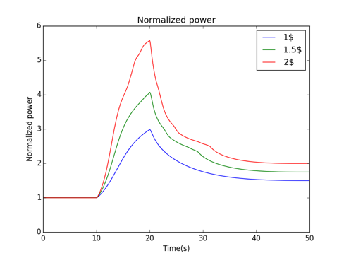
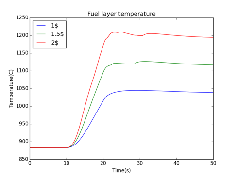
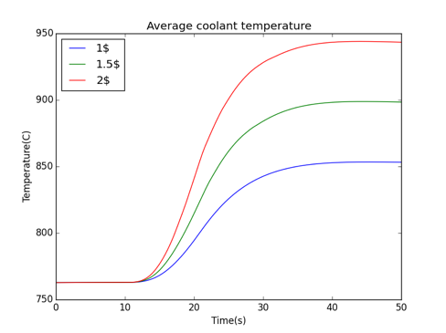

What's so Advanced about Advanced Reactors?
Kathryn (Katy) Huff


Insights at Disparate Scales
1943: Argonne
Lemont, IL
EBR I
August 24, 1951
BORAX III, 1955
Fermi I, 1966-1966
An academic reactor or reactor plant almost always has the following basic characteristics: (1) It is simple. (2) It is small. (3) It is cheap. (4) It is light. (5) It can be built very quickly. (6) It is very flexible in purpose. (7) Very little development will be required. It will use off-the-shelf components. (8) The reactor is in the study phase. It is not being built now.
On the other hand a practical reactor can be distinguished by the following characteristics: (1) It is being built now. (2) It is behind schedule. (3) It requires an immense amount of development on apparently trivial items. (4) It is very expensive. (5) It takes a long time to build because of its engineering development problems. (6) It is large. (7) It is heavy. (8) It is complicated.
USS Nautilus
SL-I, 1958-1960
Pop Quiz
pollev.com/katyhuff
A Nuclear Fuel Cycle Simulation Framework
The Nuclear Fuel Cycle
Hundreds of discrete facilities mine, mill, convert, fabricate, transmute, recycle, and store nuclear material.

Fuel Cycle Metrics
- Mass Flow
- inventories, decay heat, radiotoxicity,
- proliferation resistance and physical protection (PRPP) indices.
- Cost
- levelized cost of electricity,
- facility life cycle costs.
- Economics
- power production, facility deployments,
- dynamic pricing and feedback.
- Disruptions
- reliability, safety,
- system robustness.
Agent Based Systems Analysis
A facility might create material.

Agent Based Systems Analysis
It might request material.

Agent Based Systems Analysis
It might do both.

Agent Based Systems Analysis
Even simple fuel cycles have many independent agents.

Dynamic Resource Exchange
 \[N_i \subset N\]
\[N_i \subset N\]
Dynamic Resource Exchange
 \[N_j \subset N\]
\[N_j \subset N\]
Dynamic Resource Exchange
 \[N_i \cup N_j = N\]
\[N_i \cup N_j = N\]
Transition Analysis
- LWR to SFR
- $T_0 = 2015$
- $T_f <= 2215$
- $C_0 = 100$ GWe LWR
- Annual nuclear energy demand growth: 1%
- Legacy LWRs have either 60-year lifetimes or 80-year lifetimes.
- Spent LWR fuel reprocessed to fabricate FR fuel
- Spent FR fuel reprocessed to fabricate FR fuel
Transition Analysis

Power generated by reactor type.
Transition Analysis
Capacity deployed each year, by reactor type.
Advanced Reactors


MOOSE Framework
Moltres (coupling in MOOSE)

Moltres (data via Serpent)

Simulation Methods
- Monte Carlo Methods
- Deterministic Methods
- Hybrid Methods
Application Specific Data Processing
- Energy discretization
- multigroup
- pointwise
- piecewise linear continuous
- Angular quadratures
- Resonance integration
- ...
PyRK: Python for Reactor Kinetics
Review of Nuclear Reactor Kinetics

\[\sigma(E,\vec{r},\hat{\Omega},T,x,i)\]

\[k=1\]
Reactivity
\[ \begin{align} k &= \mbox{"neutron multiplication factor"}\\ &= \frac{\mbox{neutrons causing fission}}{\mbox{neutrons produced by fission}}\\ \rho &= \frac{k-1}{k}\\ \rho &= \mbox{reactivity}\\ \end{align} \]
\[\beta_i, \lambda_{d,i}\]
Ramp Reactivity Insertion
 {kind=link}
{kind=link}
Fuel Layer Temperature
 {kind=link}
{kind=link}
Coolant Temperature
{kind=link}
Links
A Few of My Favorite Things
- C++, Python, Fortran
- Serpent, MOOSE, ORIGEN
- xml, markdown, rst, $\LaTeX$
- Doxygen, sphinx
- CMake, conda, macports
- GoogleTest, nose
- hdf5, sqlite
- cython, boost, Coin
- jekyll, reveal.js, beamer
- yt, matplotlib, paraview
THE END
Katy Huff
katyhuff.github.io/2016-10-27-npre100
Advanced Reactors and Fuel Cycles Group by Kathryn Huff is licensed under a Creative Commons Attribution 4.0 International License.
Based on a work at http://katyhuff.github.io/2016-10-27-npre100.